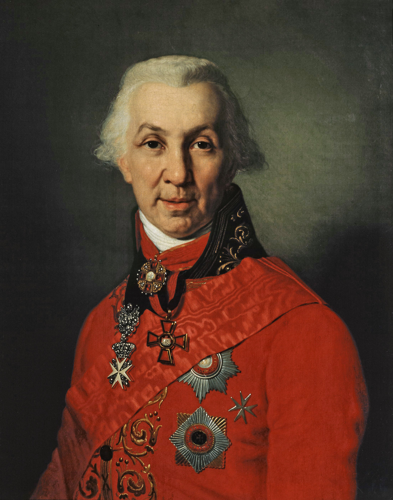

Gavrila Derzhavin (1743-1816)
Important things about him
- Changed the style of the ode as a genre
- Attributes lyric subject with greater subjectivity
- Changed notion of imperial sublime (less hierarchichal) (see Ram)
- "Felitsa" (1782), "Vodopad" (1791)
- "On the Death of Prince Mesherskyi" (1779) - from ode to elegy; variation/evolution from imperial sublime --> philosophizing on death; models Horatian ode; themes are elegaic (death), not odic
